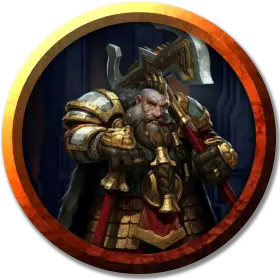

Драннин Сплитхельм
Drannin Splithelm
Средний Гуманоид (Щитовой дварф), нейтрально-злой, именной НИП

Класс Доспеха 18 (латы)
Хиты 93 (11к8 + 44)
Скорость 25 футов
| мод | спас | ||
|---|---|---|---|
| СИЛ | 19 | +4 | +4 |
| ЛОВ | 10 | +0 | +0 |
| ТЕЛ | 18 | +4 | +4 |
| мод | спас | ||
|---|---|---|---|
| ИНТ | 11 | +0 | +0 |
| МДР | 8 | −1 | −1 |
| ХАР | 12 | +1 | +1 |
Навыки Атлетика +7, Запугивание +4
Сопротивление урону холод, яд
Чувства тёмное зрение 60 футов, пассивное Восприятие 9
Языки Общий, Дварфийский
Опасность 7 (2900 опыта)
Бонус мастерства +3
Особенности
Всплеск действий (перезаряжается после короткого или продолжительного отдыха). В свой ход Драннин может совершить одно дополнительное действие.
Дварфийская устойчивость. Драннин совершает с преимуществом спасброски от яда.
Жестокость. Рукопашное оружие наносит одну дополнительную кость своего урона, когда Драннин попадает им (уже включено в атаку).
Неукротимый (перезаряжается после короткого или продолжительного отдыха). Драннин может перебросить проваленный им спасбросок. Он обязан использовать новое значение.
Второе дыхание (перезаряжается после короткого или продолжительного отдыха). Бонусным действием Драннин может восстановить себе 16 (1к10 + 11) хитов.
Особое снаряжениие. Драннин носит при себе амулет, при помощи которого он может управлять своим щитостражем и кольцо сопротивления холоду [ring of cold resistance]. Кроме того, у него есть зелье силы ледяного великана [potion of frost giant strength].
Действия
Мультиатака. Драннин совершает три атаки своей секирой.
Секира. Рукопашная атака оружием: +7 к попаданию, досягаемость 5 фт., одна цель. Попадание: рубящий урон 17 (2к12 + 4).
Описание
Драннин всегда чувствовал, что, в соответствии со своим наследием, он заслуживает от жизни куда больше, чем ему обычно достаётся. Почести проходили мимо этого своекорыстного дварфа, поэтому он начал относиться ко всякому, кто стоит на его пути, как к препятствию, пытающемуся удержать его на дне общества, и поклялся, что сделает всё от него зависящее, чтобы поменяться с ними ролями.
Сейчас Драннин пытается заполучить Рассекатель Орков — легендарную секиру, захороненную много лет назад вместе с королём Безилмера Торхильдом Флеймтангом. Загадки и тайные двери Залов Охотящейся Секиры долгое время смущали Драннина, но теперь у него появился план. Он хочет обманом втянуть своего кузена Гаргоша в поиски оружия и дать сделать за себя всю грязную работу (см. «Залы Охотящейся Секиры» в главе 6). Драннин считает, что, завладев секирой, он возвысит себя над другими членами своего клана, стает могучим владыкой и получит, наконец, то уважение, которого заслуживает.
Самым ценным имуществом Драннина является его щитостраж, амулет управления которым он украл у чародея несколько лет назад.